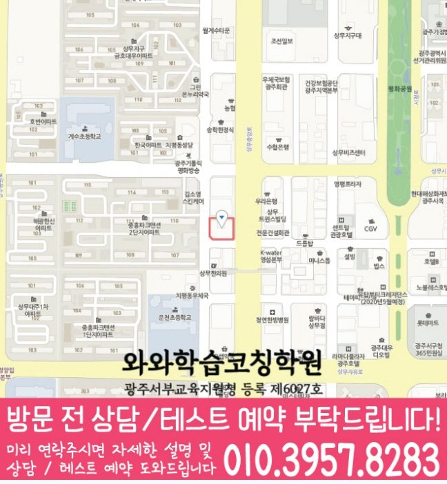

High school Korean · English · Math
치평동 고등학생 국영수학원
치평동 고등학생 국영수학원 선택 전 고등 내신 자료, 최근 오답과 과목별 가능 학년, 센터 위치·비용 확인 기준을 안내합니다.
01 Quick answer
치평동에서 먼저 확인할 내용
치평동에서 고등학생 국영수학원을 찾는다면 와와학습코칭센터 치평점의 과목별 가능 학년을 먼저 확인하세요. 제공된 고등학교 참고 자료와 학생의 실제 교재를 대조하고, 학생의 실제 풀이 기록에 맞게 세 과목을 같은 분량으로 늘리기보다 과목별 완료 기준과 재확인 날짜를 정해야 합니다.
대표 학생 상황
세 과목의 과제 순서와 오답 복습 시점을 스스로 정리하기 어려운 고등학생


010-6839-8283상담 전 핵심 안내
치평동에서 고등학생 영어·수학 학원을 찾는 학생을 위해, 현재 실력 진단부터 개념 보완, 내신·수능형 문제풀이, 오답 관리까지 이어지는 학습 흐름을 안내합니다. 지역 센터는 학생별 목표와 학습 속도를 확인해 국어·영수까지 균형 있게 연결하며, 학습 기록이 이어지도록 수업과 코칭을 함께 제공합니다. 광주광역시 서구 치평동의 고등학생에게 필요한 국영수 수업은 선행 여부 하나로 결정되지 않습니다. 치평동 학생의 현재 학습 상황을 상담 사례로 구체화해 살펴봅니다.
지금의 공부 흐름을 읽는 기준
치평동 수업 계획에서는 단원별 이해도를 바탕으로 설명할 수 있는 범위를 확인합니다. 성적만 보는 것이 아니라 개념 이해도, 풀이 습관, 오답 유형을 점검해 필요한 학습 순서를 맞춥니다.
영어·수학 집중 운영. 영어는 문법·어휘·독해 흐름을 정리하고, 수학은 단원별 개념과 유형을 나누어 실수를 줄여갑니다.
과목별 완료 기록은 수업 설명보다 치평동 학생의 실행 기록과 다음 점검 계획에서 구체적으로 확인해야 합니다. 치평동 고등학생 학습 점검에서는 계획표 작성만으로 끝내지 않고 국어·영어·수학 과제 수행, 오답 반복, 복습 주기를 함께 확인해야 합니다. 광주광역시 서구 치평동 고등학생에게 학습 관리는 부모님의 잔소리를 늘리는 방식보다 학생이 자신의 약점을 말로 설명할 수 있게 돕는 방향이 필요합니다.
질문과 기록으로 확인하는 학습 과정
막히는 지점을 정확히 짚습니다. 학생이 어려워하는 이유(개념 부족/계산 실수/독해 오해)를 파악해 같은 실수가 반복되지 않도록 연결해 줍니다.
학습 태도까지 코칭합니다. 과제·복습·오답 정리 루틴을 점검해 수업이 끝난 뒤에도 복습이 이어지는지를 기록으로 확인합니다.
치평동 고등학교 참고 자료를 상담에 활용하는 기준
상담 자료를 정리하면, 전남고·상무고·광주여고·상일여고는 제공 자료에 포함된 치평동 고등학교 참고 목록입니다. 가정에서 기록을 준비하면, 목록 포함 여부와 실제 수업 가능 여부는 같지 않으므로 상담에서 별도로 확인합니다.
다음 계획을 정하기 전에, 치평동 고등학생은 시험 범위표·학교 프린트·수행평가 일정 자료를 준비해 국어 읽기·문법, 영어 어휘·문장 적용, 수학 단원·풀이 과정을 구분하는 것이 좋습니다. 확인 순서를 세울 때, 확인한 내용을 다음 수업과 복습 계획에 어떻게 반영하는지 살펴보세요.
수업 전후 기록을 이어 가는 방법
1. 현재 수준 확인. 학년, 학교 진도, 최근 시험 결과를 바탕으로 약한 단원과 자주 틀리는 유형을 우선순위로 정리합니다.
2. 개념 정리와 유형 학습. 즉시 문제풀이로 넘어가기보다 핵심 개념을 정돈한 뒤, 내신·수능형 대표 유형부터 단계적으로 확장합니다.
3. 오답 관리와 학습 피드백. 오답을 다시 푸는 것을 넘어 원인을 기록하고, 다음에는 어떤 방식으로 접근해야 정답으로 연결되는지 피드백합니다.
교과 단계별로 나눠 보는 학습 과제
고1. 영어는 문법 기초와 독해 습관을, 수학은 단원 기본 개념을 탄탄히 다집니다. 학교 진도 기반으로 내신에 바로 적용되는 문제부터 반복 학습합니다.
고2. 치평동 수업 계획에서는 학습 시간 배분을 바탕으로 보완할 단원을 구분합니다. 치평동 과목별 점검에서는 오답 원인을 바탕으로 학습 상태를 구체적으로 확인합니다.
고3. 내신과 수능형 문제풀이를 구분해 우선순위 학습 계획을 세웁니다. 약한 단원 집중 보완, 실수 유형 차단, 시간 관리 훈련을 집중 운영합니다.
내신·시험 대비. 시험 범위와 제공된 시험지의 문항 유형에 맞춰 복습 순서를 조정하고 약점 단원을 우선 정비합니다. 치평동 학습 순서를 정할 때는 과제 이행 기록을 바탕으로 보완할 단원을 구분합니다.
치평동 지역 센터는 학생의 현재 상태를 기준으로 영어·수학 학습 방향을 정리하고, 상담을 통해 국어·영수까지 함께 고려한 로드맵을 자세히 정리합니다.
02 Consultation examples
치평동 학부모 상담 상황 예시
아래 내용은 실제 고객 후기나 성적 결과가 아니라, 상담에서 확인할 질문을 이해하기 위한 상황 예시입니다.
최근 학교 학습 준비가 한 과목에 치우친 치평동 고등학생을 가정했습니다. 학부모는 현재 교재와 학교 자료를 바탕으로 국어·영어·수학의 병목을 따로 듣고, 가정에서 확인할 기록을 정리합니다.
치평동에서 제공된 고등학교 참고 정보인 전남고·상무고·광주여고 등의 목록과 학생의 실제 학교 자료를 대조해 질문하는 상담 상황입니다. 제공 자료와 학생이 가져온 자료를 구분하고, 확인되지 않은 학교 정보나 수업 조건은 임의로 단정하지 않습니다.
03 FAQ
치평동 고등학생 국영수학원 자주 묻는 질문
학부모님이 상담 전에 자주 확인하는 내용을 질문과 답변으로 정리했습니다.
치평동 고등학생 국영수학원 상담 전에 먼저 점검할 학습 문제는 무엇인가요?
최근 시험 뒤 과목별 보완 순서를 정하기 어렵다면 시험지와 오답 기록을 함께 준비하세요. 치평동 상담에서는 내신 일정과 실제 복습 시간을 대조해 우선순위를 확인할 수 있습니다.
치평동에서 세 과목 계획을 한꺼번에 세워도 괜찮을까요?
치평동 상담에서는 국어는 지문과 선택지의 근거, 영어는 문장 구조와 해석 순서, 수학은 개념을 식으로 옮기는 과정을 따로 확인해야 합니다. 이후 시험 일정과 복습 시간을 보고 세 과목의 주간 분량을 조정합니다.
치평동 고등학생은 상담 때 어떤 학교 자료를 준비해야 하나요?
제공 목록에서 전남고·상무고·광주여고·상일여고 등을 확인할 수 있지만 모든 학교의 수업 가능 여부를 뜻하지는 않습니다. 실제 범위와 과제 자료를 준비해 상담에서 확인하는 편이 정확합니다.
치평동 학부모가 센터 운영 정보를 확인할 순서는 무엇인가요?
실제 방문 위치는 위 센터 확인 정보에서 확인할 수 있습니다. 센터별 교습비 확인 버튼에서 제공 자료를 볼 수 있습니다. 치평동 학생의 가능 학년과 개설 과목, 수업 시각과 보강 기준은 희망 센터에 직접 문의해야 합니다.
04 Continue
치평동 페이지 이동
카테고리 전체 지역 또는 앞뒤 지역 안내로 이동할 수 있습니다.